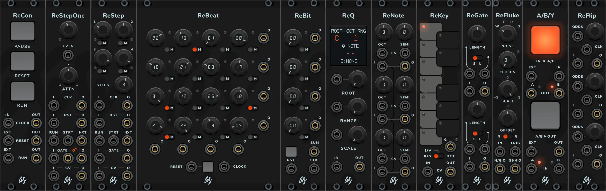

Welcome to AS Custom Works
This is the AS Seqs & Tools plugin, a paid but affordable collection of modules for the Virtual Eurorack Studio application VCV Rack 2, made from the perspective of a user and musician, and focused on useful features with a nice graphic user interface and small footprint... because even in a virtual rack, space and looks matter.
Modules:

User manual download: AS Seqs n Tools
Purchase the module set for only US$20 at the official VCV Rack store: AS Seqs & Tools
Changelog
2.1.0
Requires VCV Rack 2.4.0 or later.
New
- Panel theme per module:
Right-click a module > Panel: Follow Rack, Light or Dark. The choice is saved with the patch. - ReQ is polyphonic:
The CV input and output carry up to 16 channels, each quantized independently. Root, Scale and Range CV stay monophonic; the display shows channel 1. - ReQ range response:
Right-click > Range response: Unipolar (0 V up, as before) or Bipolar (centered on 0 V, so a MIDI keyboard below C4 also works). Octave range keeps counting octaves: in Bipolar, 4 covers -2 V..+2 V and the display shows ±4. Applies to all channels. - New buttons:
ReCon and aBy use new pad buttons with a pressed state and a radial light. ReBeat and ReBit have a matching square Reset pad. - ReSwing (new module, 4 HP):
Dual clock swing. Every second clock pulse is delayed by the swing amount (50% straight, 66.7% triplet, 75% maximum) and keeps its gate length. Swing CV adds 0–25%. CLK and RST of channel 2 are normalled to channel 1. Right-click > Swing steps: Free or Steps (50, 54, 58, 62, 66.7, 71, 75%). - ReGate overlapping gates:
Right-click > Overlapping gates: Merge (as before: a pulse that arrives while the gate is high extends it) or Retrigger (the output drops for one sample and a new gate starts, so every input pulse gives a new gate). Useful after ReSwing or with long gates on fast clocks.
Changed (may alter how existing patches behave)
- ReStep / ReStepOne: The first step now gets its gate. Gate length adapts to the clock (70 ms or 50% of the clock period, whichever is shorter). RUN starts and stops the whole chain; RESET returns to the first module in sync with the clock. Clock pulses are ignored for 1 ms after a reset.
- ReCon: PAUSE no longer cuts or creates clock pulses.
- ReQ: Notes near the top of an octave now round up to the next octave's root when it is closer (0.99 V in C major gives C, not B). The Indian scale is now 1 2 3 4 5 b6 b7 (it had a repeated note). Octave range now works as described in the manual: the input is quantized in its own octave and notes outside 0 V..range V (before the root is added) keep their name and move by octaves into it (it used to squeeze the whole 0–10 V input into that many octaves). With range 10 and a 0–10 V input nothing changes.
- ReNote: The semitone CV now follows 1 V/oct, quantized to semitones (it was 2 V per semitone).
- ReBeat / ReBit: Mute only silences a cell; its count keeps running, so it stays in phase when unmuted. Each cell's phase is counted from the last reset, so changing a divider live does not shift it. After a reset, each cell first fires on its own pulse.
- Trigger and clock inputs in all modules use VCV's standard thresholds (high above 1 V, low below 0.1 V). ReGate's Mode CV has hysteresis.
- ReFlip: Each section works on its own, depending on what is connected. Gate and clock: the clock sets when a new random value is drawn and the gate is passed according to the odds. Gate only: each gate draws its own random value. Clock only: the clock is passed according to the odds (random trigger generator). No cables: 0 V. Gates before the first clock now follow the odds too.
- aBy: Fixed 10 ms crossfade that continues from the current level, so switching mid-fade no longer clicks.
- ReGate: Minimum gate length of 1 ms.
Fixed
- ReQ: Possible crash caused by the note display reading the note name while the audio thread was changing it.
- ReFluke: Filters are set up when the module is created, and the pink filter starts from zero instead of random values; the pink filter is processed once per sample in Pink and Grey modes.
- ReStep / ReStepOne: SEQ IN was added to the output twice. ReStep now passes SEQ IN in the -10..10 V range, like ReStepOne.
- ReNote: Octave CV no longer produces fractional octaves (6 V gave +0.6 octaves).
- ReKey: The mode is restored correctly when a patch is loaded.
- Tooltips: ReFluke shows the noise type and divider; ReGate shows the gate length in ms; ReFlip's third odds CV input is labeled correctly.
- Lower CPU use in ReKey and ReBeat.
Found an issue and want to report it? You can do it here
Want the free and open source AS modules instead? Get them here: AS modules